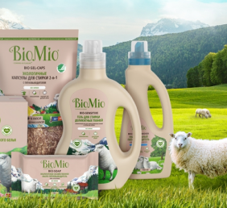

Польза овечьей шерсти для переносных кондиционеров
Вязаные изделия из натуральной шерсти ценились во все времена. Считается,что шерстяные вещи должны быть колючими, так как это своего рода рефлексотерапия. Их даже рекомендуют носить на голое тело.Колючая шерсть стимулирует нервыне окончания, полезна для тех, кто страдает заболеваниями почек, печени.Шерстяные вещи, особенно носки из чистой шерсти, полезны для людей с вегетососудистой дистонией, поскольку стимулируют кровообращение.Носки и пояса, жилеты, свитера из овечьей,верблюжьей шерсти помогают людям при артритах и болезней суставов.
